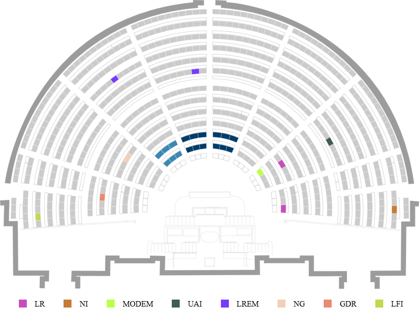
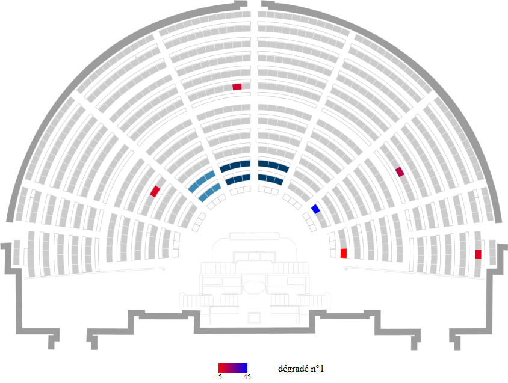
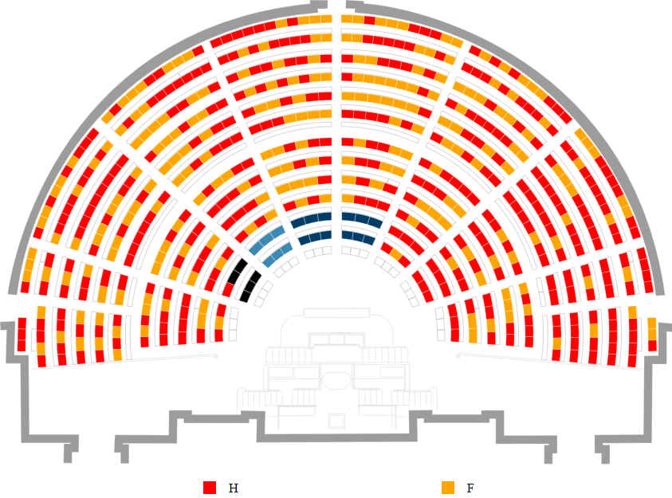
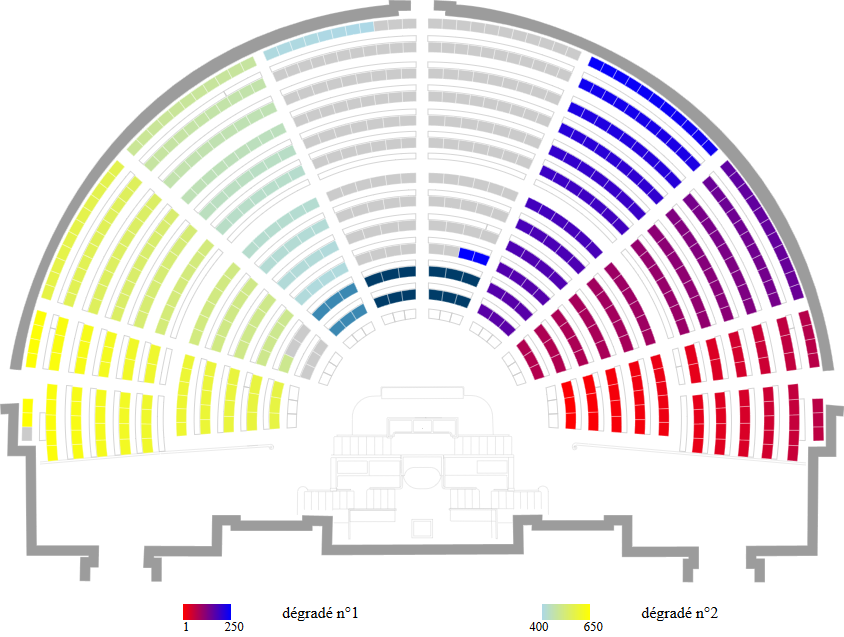

L'outil supporte l'import de fichiers au format CSV. Par défaut, les caractères de citation et de séparation sont détectés automatiquement. Dans le cas échéant, vous pouvez indiquer manuellement les options de lecture dans l'encadré "options avancées CSV". Les fichiers peuvent avoir une ligne d'entête. Les fichiers sont toujours lus avec un encodage UTF-8.
On distingue deux types de fichiers se différenciant par leurs colonnes.
Ce fichier permet d'associer une valeur à chaque siège. Selon le type de données choisi et la colonne selectionnée, l'outil considèrera les valeurs de cette colonne comme des catégories ou des valeurs numériques. Au mimnimum, le fichier doit comporter une colonne comportant les numéros de sièges à colorier. Nous attirons votre attention sur le fait que seulement quelques numéros de sièges sont valides, voir la section Numéros de sièges. Vous pouvez ensuite aggrémenter ce fichier d'autres colonnes.
Par exemple, créons un fichier de données associant 10 sièges de l'Hémicycle à un sigle de partis. Notez que ce fichier peut être avec entête ou sans. Le fait d'avoir une entête change uniquement la méthode de sélection des colonnes lors de l'import.
La première colonne définie le numéro de siège et la seconde la valeur du siège, ici des catégories dont les valeurs possibles sont les sigles des partis. Bien évidemment, le fichier contient uniquement 2 colonnes mais il est possible d'en ajouter autant que possible. De plus, il est possible de permuter les colonnes.
sans entête
1;LR 58;NI 103;UAI 77;MODEM 349;LREM 500;NG 589;GDR 629;LFI 83;LR 448;LREM
avec entête
siege;parti 1;LR 58;NI 103;UAI 77;MODEM 349;LREM 500;NG 589;GDR 629;LFI 83;LR 448;LREM
Ce qui correspond à cette représentation avec tirage de couleur aléatoire :
Voici maintenant un autre example de fichier. Associons chaque siège à une valeur numérique quelconque.
sans entête
1;-5 58;2 103;9 77;45 349;4.7 500;2
avec entête
siege;mesure 1;-5 58;2 103;9 77;45 349;4.7 500;2
Ce qui correspond à cette représentation avec tirage de couleur aléatoire :
Remarquez que les valeurs dans la première colonne représentent des nombres valides. Chaque valeur représentant un nombre (décimal ou non) doit représenté un nombre valide et être dans le format anglais, consultez ce document pour connaître les représentations possibles. Ainsi, "4.7" correspond en réalité à "4,7".
De plus, l'ordre des valeurs dans les colonnes importe peu même si l'outil analyse le fichier ligne par ligne à partir de la première.
L'outil remonte les erreurs de fichiers autant que possible. Aisni, si un numéro de siège est invalide ou qu'une chaîne de caractères représente un nombre érroné, l'outil affichera l'erreur et sa cause.
Ce fichier permet d'associer une couleur à des catégories ou intervalles continus de valeurs. Notons qu'il est possible de ne pas renseigner de palette. Dans ce cas, si la représentation choisie est :
catégorielle : une couleur aléatoire est associée à chaque catégorie. Chaque siège prend donc la couleur de sa catégorie.
numérique : un dégradé de rouge à bleu sera utilisé pour attribuer une couleur à chaque siège. Cette couleur correspond à la position de la valeur associée au siège, dans l'intervalle formé par la valeur minimale et maximale dans l'ensemble de valeurs défines par la colonne.
Contrairement au fichier de données, le fichie de palette doit respecter un format particulier :
sans entête (palette catégorielle)
... [categorie];[couleur] ... ;[couleur] ...
avec entête (palette catégorielle)
categorie;couleur ... [categorie];[couleur] ... ;[couleur] ...
On désigne par « sièges absents » les numéros de siège non renseignés dans le fichier données. La couleur des sièges absents est définie dans la palette ou se voitattribuer une couleur par défaut (même couleur que la couleur des sièges au démarrage de l’application). La couleur des sièges absents est définie dans la palette par la ligne ";[couleur]" et ";;[couleur];" respectivement une palette catégorielle et numérique.
[couleur] représente une couleur valide. Elles doivent prendre comme valeur les valeurs suivantes :
sans entête (palette numérique)
... [nombre];[nombre];[couleur];[couleur] ... ;;[couleur]; ...
avec entête (palette numérique)
min;max;couleur_dep;couleur_fin ... [nombre];[nombre];[couleur];[couleur] ... ;;[couleur]; ...
Chaque ligne de la palette numérique définie un dégradé débutant à la couleur "couleur_dep" et se terminant à "couleur_fin". De plus, la couleur des sièges prend valeur dans le dégradé uniquement si la valeur du siège est dans l'intervalle [min ; max[. En effet, borne max est exclusive alors que min est inclusive.
Les intersections entre intervalles ne sont pas autorisés et stopperont l'éxécution.
Par exemple avec une représentation catégorielle, en utilisant ce fichier comme fichier de données et celui-ci comme palette, nous obtenons ce visuel
Remarquez que certains places sont noires. En effet, ces 5 sièges n'ont pas été définie dans le fichier de données et dans la palette la couleur des sièges absents est noir.
Deuxième exemple mais cette fois en représentation numérique : assignons des dégradés selon le numéro de siège (on reprend le fichier de données précédent et cette palette). On désigne la colonne de données et de numéro de siège étant la première colonne du fichier.
Ici, on a créé deux dégradés englobant les sièges de 1 à 250 et de 400 à 650. Cette fois, la palette n'a pas définie la couleur des sièges absents, alors la couleur par défaut a été utilisé.
Il est possible d'exporter, à tout moment, la représentation de l'Hémicycle sous un fichier SVG (version 1.1) et la légende (si présente). Ce fichier d'export vous sera utile pour effectuer des retouches. Dans ce fichier, chaque tracé est nommée, par exemple les places sont numérotés.
Les sièges sont numérotés de 1 à 650. Dans cet intervalle, seul 582 numéros sont réellement effectifs.
1,2,3,5,6,7,8,9,10,11,12,13,14,15,16,17,18,19,20,21,22,23,24,25,26,27,28,30,31,32,33,35,36,38,39,40,41,43,44,45,47,48,49,50,51,52,53,54,56,57,58,59,60,62,63,64,66,67,68,70,71,72,73,75,76,77,78,79,80,81,82,83,84,85,86,87,88,89,90,91,92,93,94,95,96,97,98,99,100,101,102,103,104,105,106,108,109,110,111,112,113,114,116,117,118,119,120,122,123,124,125,126,127,128,129,130,132,133,134,135,136,137,138,139,140,141,143,144,145,146,147,148,149,150,151,152,153,154,155,156,157,158,162,163,164,165,166,167,168,169,170,171,172,173,174,175,176,177,178,179,180,181,182,183,184,185,186,187,188,189,190,191,192,193,195,196,197,198,199,200,201,203,204,205,206,207,209,210,211,212,213,214,215,216,217,219,220,221,222,223,224,225,226,227,228,230,231,232,233,234,235,236,237,238,239,240,241,242,243,244,245,248,249,250,251,253,254,255,256,257,258,259,260,261,262,263,264,265,266,267,268,269,270,271,272,273,274,276,277,278,279,280,281,282,284,285,286,287,288,290,291,292,293,294,295,296,297,298,300,301,302,303,304,305,306,307,308,309,311,312,313,314,315,317,318,319,320,321,322,323,324,325,326,327,329,330,331,332,333,334,335,336,337,338,339,340,341,342,343,344,345,346,347,348,349,350,351,352,353,354,356,357,358,359,360,361,362,364,365,366,367,368,370,371,372,373,374,375,376,377,378,380,381,382,383,384,385,386,387,388,389,391,392,393,394,395,397,398,399,400,401,402,403,404,405,406,407,409,410,411,412,413,414,415,416,417,418,419,420,421,422,423,424,425,426,427,428,429,430,431,432,433,434,436,437,438,439,440,441,442,444,445,446,447,448,450,451,452,453,454,455,456,457,458,460,461,462,463,464,465,466,467,468,469,471,472,473,474,475,478,479,480,481,482,483,484,485,486,487,488,489,490,491,492,493,494,495,496,497,498,499,500,501,502,503,504,505,506,507,508,509,510,511,512,513,514,515,516,517,518,519,520,522,523,524,525,526,527,528,530,531,532,533,534,536,537,538,539,540,541,542,543,544,546,547,548,549,550,551,552,553,554,555,557,558,559,560,561,564,565,566,567,568,569,570,571,572,573,574,576,577,578,580,581,582,583,584,585,586,587,588,589,590,591,592,593,594,595,596,597,599,600,601,602,603,604,606,607,609,610,611,612,614,615,616,618,619,620,621,623,624,625,626,627,628,629,630,632,633,634,636,637,638,639,640,642,643,644,645,648,649,650
4,29,34,37,42,46,55,61,65,69,74,107,115,121,131,142,159,160,161,194,202,208,218,229,246,247,252,275,283,289,299,310,316,328,355,363,369,379,390,396,408,435,443,449,459,470,476,477,521,529,535,545,556,562,563,575,579,598,605,608,613,617,622,631,635,641,646,647